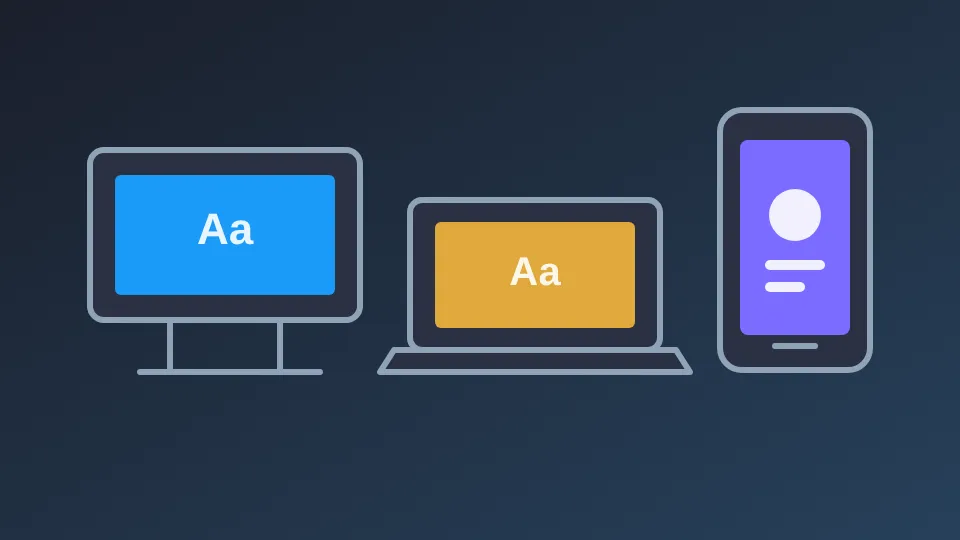

Платформы и русский язык
В Steam платформа означает операционную систему, на которой запускается игра: Windows, macOS или Linux. Один и тот же проект может выходить сразу на нескольких. Ниже видно, как распределены игры выборки по платформам, как менялась доля игр с русским языком по годам выхода и отличаются ли отзывы игр с русским языком и без него.

Игры по платформам
Вывод. Все 1 536 игр выборки вышли на Windows, на macOS — 439 (28,6 %), на Linux — 308 (20,1 %). Игры выходят сразу на нескольких платформах, поэтому доли в сумме больше 100 %. Выборка стратифицирована по годам и ценам, поэтому доли описывают её, а не весь Steam.
Библиотека графиков не загрузилась, поэтому данные показаны только таблицей.
Данные графика в таблице
Русский язык по годам выхода
Вывод. Доля игр с русским языком колеблется от 25 % у игр 2009 года до 54 % у игр 2013 года, в 2024 году она 42 %. Медианная доля положительных отзывов у игр с русским языком 82,0 %, без него 81,2 %. Разница в 0,8 пункта слишком мала, чтобы считать её закономерностью.
Библиотека графиков не загрузилась, поэтому данные показаны только таблицей.